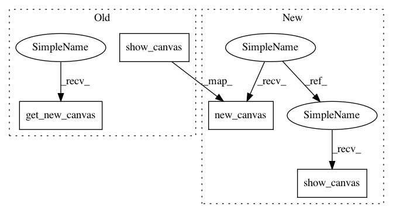

e0d48a0558f12cc6b206c6235c4c432f6c88bd07,GPy/plotting/gpy_plot/latent_plots.py,,plot_steepest_gradient_map,#Any#Any#Any#Any#Any#Any#Any#Any#Any#Any#Any#Any#Any#,284
Before Change
:param scatter_kwargs: the kwargs for the scatter plots
input_1, input_2 = which_indices = self.get_most_significant_input_dimensions(which_indices)[:2]
canvas, imshow_kwargs = pl.get_new_canvas(**imshow_kwargs)
X, _, _, _, _, Xgrid, _, _, xmin, xmax, resolution = helper_for_plot_data(self, plot_limits, which_indices, None, resolution)
if (data_labels is not None):
legend = find_best_layout_for_subplots(len(np.unique(data_labels)))[1]
else:
data_labels = np.ones(self.num_data)
legend = False
plots = dict(scatter=_plot_latent_scatter(canvas, X, which_indices, data_labels, marker, num_samples, **scatter_kwargs or {}))
plots.update(_plot_steepest_gradient_map(self, canvas, which_indices, Xgrid, xmin, xmax, resolution, output_labels, kern, annotation_kwargs=annotation_kwargs, **imshow_kwargs))
pl.show_canvas(canvas, plots, legend=legend,
xlim=(xmin[0], xmax[0]), ylim=(xmin[1], xmax[1]),
xlabel="latent dimension %i" % input_1, ylabel="latent dimension %i" % input_2)
_wait_for_updates(plots["annotation"], updates)
return plots
After Change
input_1, input_2 = which_indices = self.get_most_significant_input_dimensions(which_indices)[:2]
X, _, _, _, _, Xgrid, _, _, xmin, xmax, resolution = helper_for_plot_data(self, plot_limits, which_indices, None, resolution)
canvas, imshow_kwargs = pl.new_canvas(xlim=(xmin[0], xmax[0]), ylim=(xmin[1], xmax[1]),
xlabel="latent dimension %i" % input_1, ylabel="latent dimension %i" % input_2, **imshow_kwargs)
if (data_labels is not None):
legend = find_best_layout_for_subplots(len(np.unique(data_labels)))[1]
else:
data_labels = np.ones(self.num_data)
legend = False
plots = dict(scatter=_plot_latent_scatter(canvas, X, which_indices, data_labels, marker, num_samples, **scatter_kwargs or {}))
plots.update(_plot_steepest_gradient_map(self, canvas, which_indices, Xgrid, xmin, xmax, resolution, output_labels, updates, kern, annotation_kwargs=annotation_kwargs, **imshow_kwargs))
show = pl.show_canvas(canvas, plots, legend=legend)
_wait_for_updates(plots["annotation"], updates)
return show
In pattern: SUPERPATTERN
Frequency: 3
Non-data size: 4
Instances
Project Name: SheffieldML/GPy
Commit Name: e0d48a0558f12cc6b206c6235c4c432f6c88bd07
Time: 2015-10-07
Author: ibinbei@gmail.com
File Name: GPy/plotting/gpy_plot/latent_plots.py
Class Name:
Method Name: plot_steepest_gradient_map
Project Name: SheffieldML/GPy
Commit Name: e0d48a0558f12cc6b206c6235c4c432f6c88bd07
Time: 2015-10-07
Author: ibinbei@gmail.com
File Name: GPy/plotting/gpy_plot/latent_plots.py
Class Name:
Method Name: plot_latent_scatter
Project Name: SheffieldML/GPy
Commit Name: e0d48a0558f12cc6b206c6235c4c432f6c88bd07
Time: 2015-10-07
Author: ibinbei@gmail.com
File Name: GPy/plotting/gpy_plot/latent_plots.py
Class Name:
Method Name: plot_latent_inducing